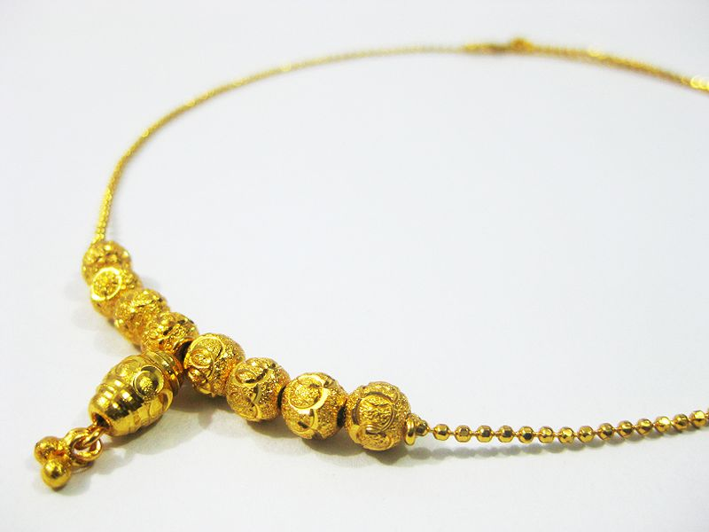

Konstsmide - Guld
Guld är kompakt, mjukt, glänsande och den mest formbara och kemiskt tåliga av alla kända metaller. Rent guld har en klart gul färg som traditionellt har ansetts tilltalande, men är så mjukt att det ensamt knappast duger till någon teknisk användning. Hårdheten kan dock ökas genom legering med mindre mängder av andra metaller och guldet blir då användbart i många sammanhang. Smyckesguld är oftast 18 karat och i Sverige vanligen 75 % guld, 16-17 % koppar och 8-9 % silver. Smyckesguld förekommer i ett flertal färger, som färgat guld.
Vid utformning och dekorering finns olika tillvägagångssätt. Den i äldre tider vanligaste och ännu förekommand tekniken är drivning, där man formar föremålet med hammare, s.k. korpusarbete. Genom drivning i kombination med ciselering kan man också utforma en dekor. Pressning utförs i stansar av stål eller brons. Gjutning sker både i sandformar och enligt vaxmetoden. Tryckning sker i en svarv, där plåten av ädelmetall spänts fast mot en trä- eller metallmodell, s. k. patron mot vilken ett blankt tryckstål under rotation formar föremålet. Hopfogning utförs genom lödning.